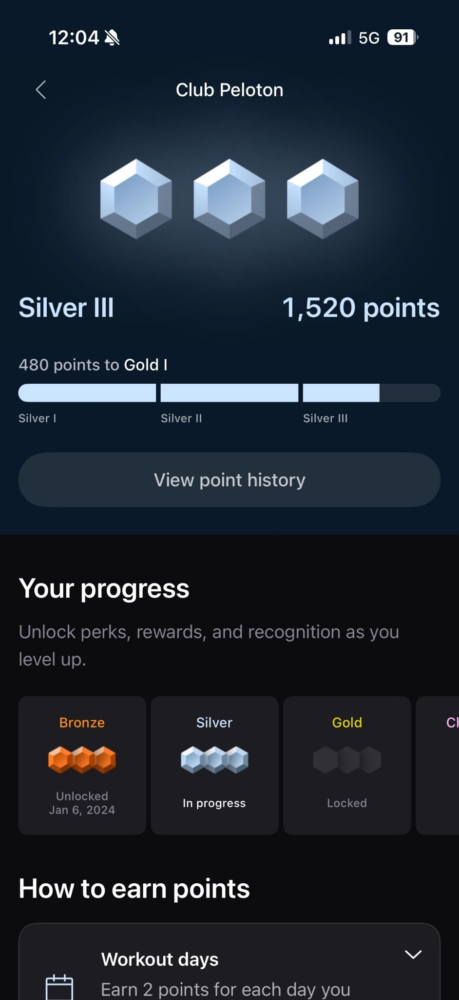
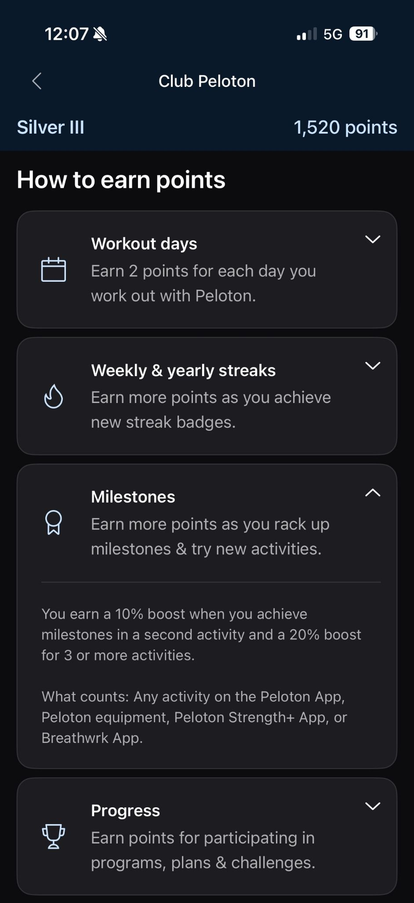
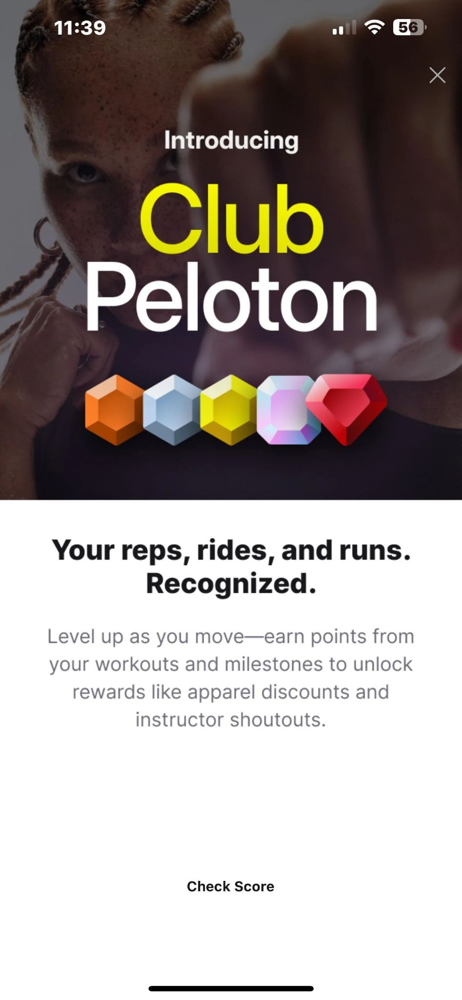
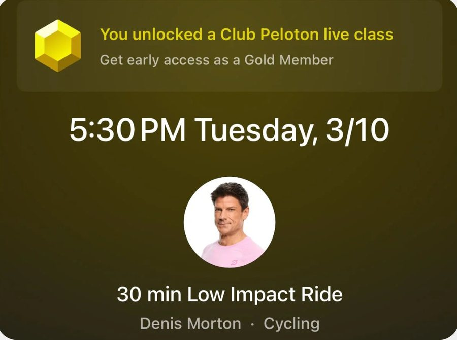
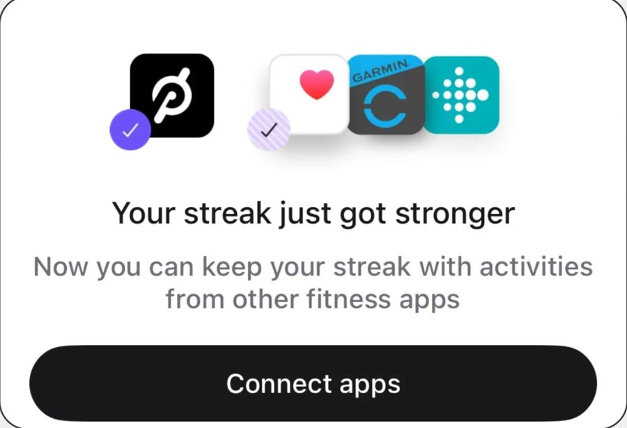
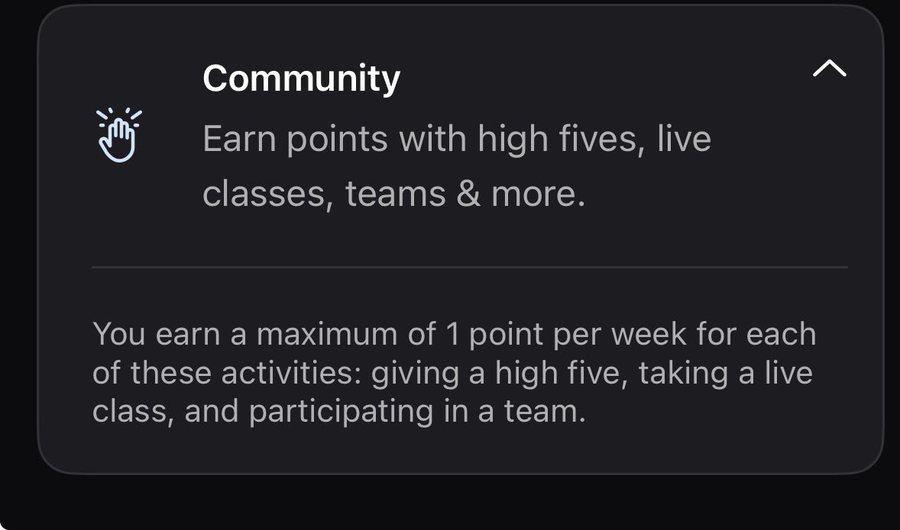
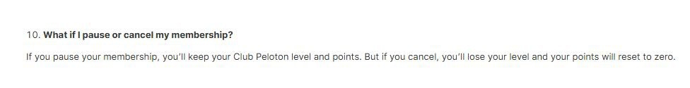

← All case studies
 Pre-Launch Comprehension Research
Pre-Launch Comprehension Research
Club Peloton


01
The Product
- Club Peloton is a loyalty and recognition program for paid Peloton members that rewards consistency and community participation.
- Members earn points for each workout day, new streak badges, milestones and trying more activities, joining programs, plans and challenges, and for high fives, live classes, teams and more.
- Peloton was building its first-ever loyalty program but had no data on whether members would understand its purpose or how to use it.

02
The Challenge
Before launch
Would members understand how to score points, level up, claim rewards, and other feature mechanics before launch?
After launch
Why weren't lower-ranked and newer members engaging, and what would motivate them to build the habit?
03
Method & Recruitment
Unmoderated think-aloud usability testing via UserTesting (12)
- Why this method: Club Peloton was a brand-new feature, so I needed to see how members navigated and reacted in real time, not just what they'd say afterward.
- Unmoderated sessions removed any influence a moderator's presence might have on behavior, while think-aloud still surfaced participants' reasoning.
- With designs locking by the end of the month, unmoderated testing let me field sessions quickly instead of scheduling 12 individual moderated interviews.
Recruitment: an equal mix of Peloton members
- Screened for a spread across age group, gender, location, tenure, rank (Bronze, Gold and Legend) and platform (desktop and app).
- Why this mix: comprehension could plausibly vary by tenure, rank, platform and demographics, so I needed signal across every group to make sure there were no gaps in comprehension once Club Peloton launched.
04
Logistics & Process
3 days
Scoping & Recruitment
- Stakeholder meetings
- Determining method
- Creating research brief
- Gathering stakeholder input
- Creating screener and unmoderated guide
2 days
Fielding
- Gathering a list pull of potential participants
- Getting Figma assets from designers
- Launching unmoderated test among 12 members
4 days
Analysis & Report
- Reviewing session recordings and transcripts
- Using AI to help pull representative quotes
- Identifying patterns and themes
- Drafting insights and recommendations
1 day
Present
- Presenting findings to stakeholders
- Gathering feedback and aligning on next steps
Total time: ~2 weeks
Running the study
Step 1
Introduction & expectations
- Set context, explained the think-aloud format, and set expectations that there were no wrong answers.
Step 2
Natural exploration
- Starting from the app home screen, participants explored freely to find Club Peloton information.
Step 3
Comprehension questions
- Asked participants to explain scoring, leveling, and reward mechanics in their own words.
Step 4
Task-specific follow-ups
- Directed participants to specific flows to probe areas that natural exploration didn't reach.
How I analyze feedback
Review
Review sessions
- Watched recordings and read transcripts for recurring patterns of confusion, sentiment, and behavior.
Log
Log themes
- Documented emerging themes in a data log as they surfaced across sessions.
Quote
AI-assisted quote pulling
- Used AI to pull representative verbatim quotes tied to each theme, speeding up synthesis.
05
Pre-Launch Findings & Impact
Rewards
Insight
Rewards stood out as an enticing incentive, but members lacked clarity in what they would earn throughout their progression.
Recommendation
Add concrete examples of different rewards members can get at each tier. If/when rewards are updated, use them as a key moment to reach out to members to spark interest.

“I didn't care about the points until there was a possibility for apparel, free t-shirts, or even a hand signed poster.”
Fairness
Insight
Fairness concerns stemmed from untracked activities, overexertion, slow point accumulation, and inability to freeze streaks.
Recommendation
Implement streak freezes as level-up rewards. Notify members of multi-point gains from milestones/streaks and promote tracking of third-party workouts and recovery workouts.

Community points
Insight
Participants believed they could earn multiple points a week for high fives, causing annoyance and unfairness.
Recommendation
Change language in copy for community points so members understand there is a maximum per week (e.g., “You earn at most 1 point for giving high five(s) each week.”).

“You get points for high fiving other members. So I imagine that classes are gonna get kind of annoying with all the high fives. I don't wanna have to focus on high fiving during a class or seeing high fives during a class.”
Cancellation and pausing
Insight
Resetting points on cancellation was seen as fair, but many members didn't realize they could pause their membership instead of canceling.
Recommendation
Add pausing language to the FAQ, and show what rank and points would be lost if they cancel.

06
Business Impact
20%90-day adoption vs. 15% benchmark (+5 pts)
Why this matters
After launch, Club Peloton exceeded our 90-day adoption benchmark of 15%. The comprehension issues surfaced pre-launch (reward clarity, fairness concerns, functionality confusion) were resolved before rollout, removing friction that could have suppressed early adoption.
07
Follow-up: Attitudinal Survey (n = 1,600)
At 90 days, engagement data showed new members and lower-engaged members were adopting Club Peloton less than others, despite the pre-launch comprehension fixes. That became the basis for a quantitative follow-up: why weren't lower-ranked and new members engaging?
Attitudinal Survey (1,600)
- Overall sentiment toward Club Peloton, by rank and engagement
- Additional comprehension questions
- Awareness and experience of rewards
- Which rewards to prioritize, by rank
- Behaviors changing due to Club Peloton
Analysis
- Gathering demographics and list pull from data analytics
- Mann-Whitney U testing for significance
- Stat-sig testing against demographics
- Thematic coding of open-ended responses
- Report shared with internal and external teams; worked with product and design to prioritize features from the recommendations
Insight
Most members felt neutral toward Club Peloton, citing unclear purpose and value, slow progression, and low visibility.
Recommendation
Increase engagement opportunities at every level and provide more accessible, upfront information on rewards and progression.
Insight
Lower-ranked members were less satisfied and more confused about their level and how to earn points.
Recommendation
Increase touchpoints and clarity on how points and leveling work, especially for lower-ranked members.
Insight
~25% of members reported improved workout behaviors via Club Peloton; the rest focused on other parts of the product.
Recommendation
Offer bonus points for different class types, longer sessions, and recovery classes to drive deeper gamification and habit formation.
Insight
Members who had experienced or knew about rewards were more satisfied, but reward exposure skewed toward higher-ranked members. Lower-ranked, less-engaged members were less likely to know rewards existed at all.
Recommendation
Publish the reward matrix and provide more rewards for lower-ranked members to close the exposure gap.
Insight
Of the rewards tested, discounts on third-party apparel and tickets to professional sporting events were the most enticing across all members.
Recommendation
Move forward with third-party apparel discounts and professional sporting-event tickets as reward offerings.
08
Takeaways
What this reinforced in me
Comprehension research before a launch is cheap insurance to remove friction points that could have suppressed adoption. And impact doesn't end at the readout: it continues into the product development lifecycle.
What I'd do differently
I recruited an even spread across rank and tenure, but the 90-day data showed the real risk was concentrated in lower-ranked and newer members. With more time, I'd oversample that segment so I could catch this before launch instead of 90 days after.